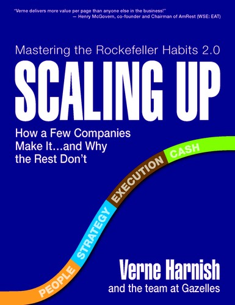
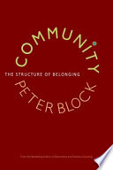
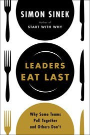

Primary Audience Alignment
Analytical Scope
Mood and Tone
Grounded in real leadership cadence, metrics, meetings, and execution pressure rather than abstract theory.
Direct about fear, control, masked honesty, and why operating-system rollouts fail in practice.
Focused on repair and durability rather than critique for its own sake.
Balances rigor with belonging, psychological safety, and intrinsic accountability.
Primary Audience Demographics
- • SMB owners/founders/CEOs (services, trades, agencies, SaaS, light manufacturing)
- • COOs/operations leaders and integrators (including EOS Integrator archetype)
- • VPs/Directors of People/HR and organizational development leaders
- • General managers, department heads, and functional leaders (Sales, Finance, Client Success)
- • Management consultants, EOS/Scaling Up-style implementers, executive coaches
- • Project/program managers and business operations analysts
- • LinkedIn (primary)
- • YouTube (talks, interviews, workshop clips)
- • X (Twitter) for business/ops discourse
- • Instagram for leadership creators and carousel summaries
- • Reddit (r/Entrepreneur, r/smallbusiness, ops/management communities)
- • Executive leadership team book clubs (monthly/quarterly)
- • Founder/CEO peer groups (EO, YPO, Vistage-style reading cohorts)
- • Company-wide leadership development cohorts with guided discussion prompts
- • Consultant-led client cohorts (implementation groups around EOS/Scaling Up)
- • Peer referrals from other founders/COOs
- • Consultants, EOS/Scaling Up implementers, and executive coaches
- • Podcasts and newsletter authors in leadership/operations
- • Conference speakers, workshop facilitators, and L&D leaders
- • Amazon/Goodreads 'similar to' recommendations within business/leadership
- • Airport bookstores and business sections for travel reading
- • Online purchasing (Amazon/Bookshop) driven by immediate operational need
- • Bulk/team purchases for leadership teams and offsites
- • Conference/event bookstores and speaker-table sales
- Workplace and leadership-relevant series (e.g., The Bear for pressure/culture dynamics)
- Business reality/competition formats (e.g., Shark Tank/Dragons’ Den)
- Documentary series on teams and performance (sports/organization docuseries)
- Tech/work culture satires (e.g., Silicon Valley)
- Business and innovation dramas (e.g., The Social Network)
- Leadership-under-pressure stories (e.g., Apollo 13)
- Team/process documentaries (e.g., sports leadership and behind-the-scenes series)
- True-story problem-solving narratives (e.g., Moneyball)
- Productivity/working playlists (lo-fi, instrumental, focus music)
- Podcast-first audio habits (less music, more spoken-word business content)
- Contemporary pop/rock and adult alternative
- Design thinking and information design (charts, frameworks, visual models)
- Modern minimalist design and workshop/whiteboard aesthetics
- Business infographic content and visual summaries
- Professional development and coaching programs
- Networking and mastermind groups
- Strength training/running/cycling (routine-oriented lifestyles)
- Travel tied to conferences/offsites
- Journaling/planning systems and productivity tools
Aisha Patel
Scaling OperatorChief Operating Officer (COO) at a 120-person B2B services firm • Toronto, Canada (works with US clients/teams)
Age
35–44
Education
MBA + undergraduate degree in business/engineering
Income
$180,000–$260,000 USD equivalent (base + bonus)
Status
Married/partnered
Core Needs
A clear, repeatable playbook that upgrades leadership meetings, accountability, and cross-functional execution while reducing fear-based control. She needs language and rituals that help leaders surface what the organization is “pretending not to know,” align on metrics, and create belonging without sacrificing performance.
Fears
That the operating system becomes a mechanical install—short-term gains but no transformation; that meetings turn into scorecard policing; that candor disappears behind “careful masks,” leading to hidden issues, attrition, and execution drift; that she’ll be blamed for cultural problems she can’t fix alone.
Psychological Motivations
High need for competence and mastery; seeks control through clarity and cadence but is actively trying to replace command-and-control reflexes with facilitation and trust. Motivated by intrinsic accountability—wanting teams to commit because they belong, not because they fear consequences.
Value Drivers
Relatable characters, community-driven drama, emotionally uplifting arcs, and realistic yet hopeful resolutions.
Books This Persona Loves
Top three highlighted, with more picks below.
Traction
Gino Wickman
A proven SMB operating system that provides structure, cadence, and accountability tools she can implement quickly.

Scaling Up
Verne Harnish
A scaling-focused execution framework that makes planning and metrics tangible across teams.

Dare to Lead
Brené Brown
A leadership approach that normalizes vulnerability and courageous conversations as performance multipliers.
Interest Profile
Films
TV Shows
Music
Art & Creative Interests
Hobbies
Reading Behavior
Social Style
Discusses frameworks with the CEO and leadership team; shares distilled takeaways with managers; occasionally posts implementation notes on LinkedIn and in operator communities.
Reading Times
Early mornings, flights, and hotel evenings during offsites; weekend blocks when planning quarterly priorities.
Recommendation Likelihood
High—if the book provides practical scripts/checklists that improve meeting quality and accountability quickly.
Reading Tracking
Tracks books and highlights via Kindle/Apple Books notes; maintains an internal Notion/Confluence page of ‘operating system upgrades’ and links key passages to leadership rituals.
Reading Habits
Discovery Methods
"I’m not looking for softer leadership—I’m looking for leadership that makes the system actually stick because people own it." — Aisha Patel
Marcus Reynolds
Executive Coach/FacilitatorExecutive coach and leadership offsite facilitator (focus: scaling leadership teams) • Austin, Texas, USA (serves global clients remotely)
Age
45–54
Education
Bachelor’s degree + coaching certifications; ongoing continuing education in organizational psychology
Income
$140,000–$320,000 (variable with client load)
Status
Divorced; co-parenting
Core Needs
A structured yet humane facilitation framework that helps leaders build belonging, truth-telling, and intrinsic accountability while preserving the rigor of operating cadences. He needs language that bridges metrics and meaning, and materials that translate into offsite agendas, scripts, and coaching homework.
Fears
That clients will treat operating systems as a shortcut and blame the tools when leadership behavior is the real constraint; that vulnerable dialogue will be dismissed as ‘soft’; that he’ll be perceived as anti-metrics; that culture work will become vague and unmeasurable, reducing executive buy-in.
Psychological Motivations
Motivated by helping leaders confront ego defenses (answer-giving, control, certainty) and replace them with facilitative leadership. Finds meaning in converting organizational anxiety into shared purpose and disciplined practice—turning pressure-filled rooms into communities capable of extraordinary outcomes.
Value Drivers
Courage, transparency, consent-based influence (invitation over coercion), psychological safety, measurable progress, and dignity at work.
Books This Persona Loves
Top three highlighted, with more picks below.

Community: The Structure of Belonging
Peter Block
A foundational text on belonging and the power of invitation-based community building that directly informs his facilitation stance.

Leaders Eat Last
Simon Sinek
A trust-and-safety leadership book he uses to help executives understand the human cost of fear-based cultures.
Scaling Up
Verne Harnish
A practical operating system reference that makes cadences, scorecards, and accountability concrete in SMB contexts.
Interest Profile
Movies
TV Shows
Music
Art & Creative Interests
Hobbies
Reading Behavior
Social Style
Social; enjoys discussing books and sharing insights with colleagues and friends.
Reading Times
Late evenings and during travel for work.
Recommendation Likelihood
Very high—sees books as tools for inspiration and social change.
Reading Tracking
Keeps a handwritten reading journal; occasionally shares reviews online.
Reading Habits
Discovery Methods
"Tools don’t transform organizations—people do, and people change through better conversations held in reliable rhythms." — Marcus Reynolds
Market Positioning
This section shows where your book sits in the market, which categories it fits, and how readers and retailers are most likely to discover it.
Primary Category
Business & Economics / LeadershipSecondary Categories
Target Shelf Placement
- • Business—Leadership
- • Business—Management & Workplace Culture
- • Entrepreneurship/Small Business
- • Professional Development
- • Business Consulting/Operations
Price Positioning
Upmarket trade business pricing aligned with premium leadership/management titles; support a higher perceived value via toolkits (audits, checklists, scripts), figures, and implementation guidance that can justify hardcover and business-audiobook price points.
Seasonal Strategy
Primary: Q4–Q1 (annual planning, new-year resets, leadership offsites, budget/OKR cycles). Secondary: late summer/early fall (strategic planning season for many SMBs) and conference/speaking circuit windows.
Brand Positioning
This section defines how your book should be presented to readers. It captures the core message, emotional appeal, and the traits that make it stand out.
Unique Value Proposition
A community-enhanced leadership playbook that makes operating systems (Traction/EOS or Scaling Up) actually stick—pairing execution rigor (cadence, metrics, roles, tools) with concrete belonging-and-truth practices (structured conversations, participation rituals, shared source of truth) to create intrinsic accountability and sustainable transformation.
Target Reader Identity
SMB founders/CEOs, operators, and leadership teams implementing (or re-implementing) Traction/EOS or Scaling Up, plus consultants/coaches who need a culturally durable, behavior-change-oriented approach beyond “installing” tools.
Emotional Appeal
Relief from the exhaustion of working too hard for too little reward; confidence that there is a workable path from mechanical compliance to shared commitment; hope that performance and humanity can coexist through courageous conversation and clear rituals.
Market Differentiation
Differentiates by explicitly diagnosing why operating-system rollouts fail (mechanical installation, command-and-control habits, hidden realities) and supplying a relational ‘container’—community practices, scripts, and participation rituals—integrated with the hard mechanics (scorecards, meeting rhythms, accountability structures).
Subgenre Classification
This section is a snapshot of the subgenres and story patterns your book aligns with, showing where it naturally connects in the wider landscape of discovery.
Unique Positioning
This section highlights what sets your story apart in a crowded market and shows the qualities that make it stand out to readers and retailers.
Where most execution frameworks stop at tools and cadence, Supercharge adds the community practices that convert compliance into commitment—turning the operating system into a shared social system.
Competitive Analysis
Direct Competitors
Books that share the closest mix of tone, tropes, emotional arc, and audience expectation. These are the titles your readers are most likely to consider alongside yours, and the ones your marketing, pitch, and positioning will naturally compete with.

Traction
by Gino Wickman
Similarities
- • Operating-system implementation guidance for small-to-mid-sized companies
- • Emphasis on meeting cadence, clarity, accountability, and execution
- • Tool- and framework-driven, practical application
Differences
- • Supercharge positions community/belonging and conversation practices as the missing ingredient for lasting transformation
- • Greater focus on leader behavior change (from command-and-control to shared ownership) as a prerequisite for tools to work
- • More explicit bridge between relational culture work and operating-system mechanics

Scaling Up
by Verne Harnish
Similarities
- • Structured operating rhythm and planning disciplines
- • Metrics/KPIs and execution focus for growth-stage organizations
- • Practical tools usable in offsites and leadership-team settings
Differences
- • Supercharge centers culture/community as the enabling container rather than prioritizing growth mechanics
- • Provides explicit comparison/contrast and transition guidance between frameworks
- • Stronger emphasis on truth-telling, dissent, and psychological safety as operational accelerators

Community: The Structure of Belonging
by Peter Block
Similarities
- • Belonging/community as a driver of organizational health
- • Emphasis on structured conversations and participation
- • Shift from control/deficit framing to possibility and commitment
Differences
- • Supercharge is more operationally prescriptive with implementation artifacts (cadences, scripts, checklists, audits)
- • More tightly integrated with EOS/Scaling Up mechanics and SMB execution contexts
- • More explicitly positioned as an implementation playbook rather than a primarily philosophical/community text

Dare to Lead
by Brené Brown
Similarities
- • Courage, vulnerability, and honest conversations as leadership essentials
- • Culture change framed as behavior change, not just strategy
- • Coaching-forward tone that challenges leaders
Differences
- • Supercharge anchors the emotional/cultural work directly to operating-system cadences, metrics, and accountability tooling
- • More oriented to SMB execution environments and implementation consulting contexts
- • Heavier emphasis on comparative framework guidance (Traction vs Scaling Up) and a “source of truth” operating layer

Leaders Eat Last
by Simon Sinek
Similarities
- • Trust and psychological safety as foundations for performance
- • Values-driven leadership aimed at healthier organizations
- • Accessible, inspirational leadership messaging for broad business audiences
Differences
- • Supercharge is more framework-heavy, tactical, and cadence-driven (rituals, checklists, metrics)
- • More explicit critique of ‘installed’ systems and compliance-driven implementation
- • More specialized to operating-system adopters and consultants/coaches
Indirect Competitors
Books that share adjacent themes, moods, or audiences. These aren't direct comparisons in plot or structure, but they attract readers who may also connect with your work. They help you understand nearby markets, crossover potential, and secondary positioning opportunities.

The Advantage
by Patrick Lencioni
Similarities
- • Leadership-team clarity and health as performance multipliers
- • Meeting/communication disciplines as culture shapers
- • Emphasis on trust and cohesive leadership behavior
Differences
- • Less directly tied to EOS/Scaling Up implementation artifacts and side-by-side framework comparisons
- • Typically less checklist/audit-driven in operating-system mechanics
- • More narrative/fable-adjacent framing in parts of Lencioni’s ecosystem versus Supercharge’s consulting-playbook style
Indirect competitor because it argues organizational health (clarity, cohesion, trust) is the ultimate advantage and provides leadership-team practices that overlap with Supercharge’s community-and-accountability aims.

The Five Dysfunctions of a Team
by Patrick Lencioni
Similarities
- • Focus on trust, conflict, commitment, and accountability
- • Common use in leadership-team development contexts
- • Addresses masks, fear, and avoidance behaviors
Differences
- • Supercharge integrates operational cadence (metrics, meeting rhythms) as a core delivery mechanism
- • More explicit SMB operating-system implementation orientation
- • Broader system-level ‘source of truth’ framing beyond team dynamics
Indirect competitor as a widely adopted team-trust model that leadership teams may use instead of, or alongside, community-enhanced operating rhythms.

The Culture Code
by Daniel Coyle
Similarities
- • Belonging and safety as prerequisites for high performance
- • Practical culture-building behaviors and rituals
- • Accessible guidance for leaders under pressure
Differences
- • Supercharge is more prescriptive about operating rhythms, accountability metrics, and implementation structure
- • More directly aimed at leaders choosing/using EOS or Scaling Up
- • More comparative and diagnostic (audits/checklists) rather than example-driven reportage
Indirect competitor because it provides widely consumed culture-building principles (belonging cues, safety, shared purpose) that can substitute for Supercharge’s community layer.
Market Gaps & Opportunities
This section highlights areas where reader demand is high and competition is low, giving your book a natural advantage. Use these insights to shape pitch language, refine metadata, and guide your marketing and targeting choices.
-
A practical bridge between operating-system mechanics and culture change that is implementation-native (scripts, rituals, audits) rather than purely inspirational.
Many business books either teach execution systems (EOS/Scaling Up) or discuss leadership/culture in broad terms; fewer integrate both with step-by-step practices that address why rollouts become compliance-driven and fail to transform behavior.
Impact: Positions the book as a ‘missing manual’ for sustaining operating-system adoption, increasing word-of-mouth among leadership teams and consultants who see repeated implementation fatigue.
-
Reframing accountability as intrinsic and community-supported, not enforced—while still maintaining rigorous metrics and cadence.
Leaders often swing between rigid scorekeeping and culture-first “softness.” The manuscript explicitly argues for rigor plus belonging, offering a differentiated middle path that matches current appetite for humane, high-performance workplaces.
Impact: Expands appeal beyond strict EOS devotees to leaders who want performance without toxic control dynamics, supporting broader corporate L&D and executive-coaching adoption.
-
Decision and transition guidance for teams choosing between Traction/EOS and Scaling Up—and for organizations that already ‘installed’ a system but didn’t get transformation.
The market includes many partial adopters and re-implementations; buyers need diagnosis and a path forward more than another framework pitch.
Impact: Captures the sizable re-implementation and consultant-led remediation segment, increasing bulk-sale potential for workshops and coaching engagements.
Marketing Strategy
Pre-Launch
6 weeks pre-launch (awareness)
- Build reach and authority by challenging the ‘install the system and you’re done’ myth and naming the hidden costs below the iceberg (silos, disengagement, rework, meeting bloat). Drive to a simple landing page and lead magnet.
- LinkedIn thought-leadership posts and newsletters, short-form video (30–60s), podcast interviews, guest articles, carousel posts (frameworks), quote cards, PR pitches to business outlets
- Optimize for video views, landing page views, and engaged clicks; A/B test hooks (iceberg vs compliance/commitment vs source of truth). Retarget viewers and site visitors into Consideration.
Launch
2 weeks around launch (conversion)
- Convert attention into trust and identifiable demand using practical proof: audits, checklists, comparison charts (Traction vs Scaling Up vs Community-Enhanced overlay), and a 45–60 minute webinar/masterclass.
- Lead magnet (PDF + score), 3-email nurture sequence, webinar/masterclass, LinkedIn Live, case-study posts, podcast ‘bonus downloads’, retargeting ads, partner email swaps with implementers/coaches
- Optimize for email sign-ups, webinar registrations, and time-on-page. Segment email by role (CEO/COO/HR/consultant). Use retargeting with proof points (testimonial snippets, meeting-time savings, accountability outcomes).
Post-Launch
6 weeks post-launch (sustain momentum)
- Drive pre-orders, bulk/team purchases, and speaking/workshop bookings using urgency (launch bonuses), clear outcomes (shorter meetings, intrinsic accountability), and concrete next steps.
- Pre-order campaign (bonuses: templates + video training), launch team/review crew, retailer-optimized book page copy, email sales sequence, LinkedIn pinned post + featured section, Amazon Ads, bulk/b2b outreach (HR/L&D/COOs), partner webinars with implementers
- Optimize for purchase conversions and booked calls. Use offer tiers (individual, team pack, enterprise workshop). Retarget cart/checkout intent audiences; rotate creative by segment (leaders vs consultants).
Campaign Structure
Key Themes to Emphasize
Social Media Posts
Most leadership teams see only a small fraction of what’s really happening in their organization. If you’re “installing” EOS/Traction or Scaling Up and still feeling stuck, it’s not because the tools are broken. It’s because community is missing. Tools + rhythms + a shared source of truth + courageous conversation = transformation. Want the audit checklist? Comment “AUDIT” and I’ll share it.
Hard truth: a scorecard can create compliance… or commitment. The difference is whether your operating system is paired with real participation, belonging, and ownership. Ask your team this week: Are our tools producing compliance—or commitment?
“Success becomes defined as the absence of problems rather than the presence of possibility.” If your meetings are efficient but lifeless, you might have installed the system—without achieving transformation. Supercharge is about making the system *stick* by building the community that supports it.
Processes should be a leadership tool—not a bludgeon. If your team dreads the rhythm, you’re paying the hidden iceberg costs: rework, silence, and performative agreement. There’s a better way: rigor + belonging + truth-telling.
Target Channels
Digital
Social Media Posts
- LinkedIn (primary): posts, carousels, newsletter, short video, LinkedIn Live
- YouTube (secondary): 5–10 minute practical frameworks + shorts repurposed from LinkedIn
- X (supporting): contrarian hooks + podcast promotion
- Facebook Groups (selective): EOS/SMB leadership communities where allowed
Primary KPIs
- Meta Ads (retargeting + lookalikes tied to lead magnet and webinar)
- LinkedIn Ads (job title targeting for CEOs/COOs/HR; promote webinar and bulk/team offers)
- Amazon Ads (keywords: Traction, EOS, Scaling Up, leadership team meetings, accountability, company culture)
- Google Search (test): EOS implementer, Traction meeting, leadership accountability, operating system adoption
Audience-Specific Messaging
- Flagship lead magnet: Community-Enhanced Operating System Audit (score + recommendations)
- Webinar/masterclass: “Tools Aren’t Enough: How to Turn EOS/Scaling Up into Commitment, Not Compliance”
- Comparison asset: Traction vs Scaling Up vs Community-Enhanced Overlay (2-page chart)
- Weekly LinkedIn newsletter series: Source of Truth, Rituals, Courageous Conversations, Intrinsic Accountability
- Podcast guesting kit: talking points + 3 audience takeaways + downloadable worksheet
- Case-style vignettes: shorter meetings, less rehashing, better truth-telling, clearer scorecards
Traditional
Print Media
- Business book reviews and features (business press, leadership magazines)
- Trade associations’ newsletters (operations, HR, SMB)
- Conference program ads where EOS/Scaling Up audiences gather (selective, ROI-tested)
Events
- Leadership offsites and planning retreats (key use case)
- Workshops for EOS/Scaling Up user groups and implementer communities
- Business conferences for founders/COOs/ops leaders
- Corporate L&D sessions on accountability, meetings, and psychological safety
Partnerships
- EOS Implementers and EOS Worldwide-adjacent communities (compliant, value-add partnerships)
- Scaling Up coaches and Growth Institute ecosystem
- Executive coach networks and facilitator communities
- SaaS platforms for scorecards/OKRs/meetings (co-marketing webinars)
- Business peer groups (EO, Vistage-style groups, local CEO roundtables)
Messaging Framework
Primary Tagline
Tools don’t transform companies—community does.
Supporting Messages
Installing EOS/Traction or Scaling Up is only the beginning; lasting change requires the relational container that makes the tools stick.
Build a shared source of truth—no politics, no alternative facts—so teams can act with clarity and speed.
Replace command-and-control with participation: rituals and conversations that create belonging and intrinsic accountability.
Stop measuring success as the absence of problems; build the conditions for possibility, learning, and extraordinary results.
Turn meetings into leadership tools, not bludgeons—shorter, clearer, and more human.
Sample Copy
Back Cover Blurb
You can install Traction/EOS or Scaling Up and still fail to transform your company. Supercharge offers a new playbook for leaders who want operating-system rigor without turning people into data points. David Norman argues that tools and rhythms only work when they’re paired with deliberate community-building practices—shared sources of truth, participation, and courageous conversations that convert compliance into commitment. With practical audits, checklists, scripts, and side-by-side framework guidance, Supercharge helps leadership teams surface what they’re pretending not to know, shorten and strengthen meetings, build intrinsic accountability, and create a culture where execution and belonging reinforce each other. Because installing the system isn’t the finish line. It’s the beginning.
Email Subject Lines
- • You installed the system. So why isn’t it transforming anything?
- • Compliance isn’t accountability (here’s the difference)
- • The missing piece in EOS/Scaling Up implementations
- • What are we pretending not to know?
- • A practical audit to make your operating rhythm actually stick
- • Tools aren’t enough—community is the multiplier
Video Creative Scripts
Script
ON CAMERA (direct-to-camera, 45–60s) “Have you ever installed an operating system—EOS/Traction or Scaling Up—and thought: ‘We’re doing the meetings, we have the scorecard… so why does it still feel like we’re not transforming?’ Here’s the problem: tools create structure, but they don’t automatically create community. If your system produces compliance—people nodding, updating numbers, avoiding the hard truths—you’ll get activity without ownership. Transformation happens when you pair the rhythms with a shared source of truth *and* the conversations that build belonging, participation, and intrinsic accountability. If you want a practical way to assess this, I created a simple audit checklist. Grab it at the link.”
Sora Prompt
Create a 60-second professional talking-head video of an executive coach in a modern office setting. Clean lighting, neutral background with subtle leadership visuals (whiteboard, calendar, dashboard). The speaker addresses the camera with calm authority. Overlay kinetic text for key phrases: 'Tools aren’t enough', 'Compliance vs Commitment', 'Shared Source of Truth', 'Community is the multiplier'. Cutaways show quick b-roll: leadership team meeting, hands placing sticky notes on a board, a dashboard/scorecard on a laptop, a circle of chairs suggesting dialogue. Corporate, premium, human-centered tone.
Script
ANIMATED/VOICEOVER (30–45s) “An iceberg is mostly invisible. So are the real costs of a tool-only implementation: silence in meetings, disengagement, rehashing the same issues, and leaders carrying the weight alone. Supercharge is a new playbook that makes operating systems stick—by combining proven rhythms with community-building practices: participation, truth-telling, and a shared source of truth. Install the system. Build the community. Get transformation.”
Sora Prompt
Create a cinematic 45-second animated explainer. Start with an iceberg in a calm ocean labeled 'Operating System'. Reveal the larger underwater portion labeled 'Hidden Costs: silos, silence, rework, disengagement'. Transition to woven fabric imagery (warp and weft) labeled 'Systems + Community'. Show a simple dashboard/scorecard and a meeting calendar morphing into a circle of chairs. End on a clean title card: 'SUPERCHARGE: Tools don't transform companies—community does.' Use a modern business color palette, minimal text, smooth transitions.